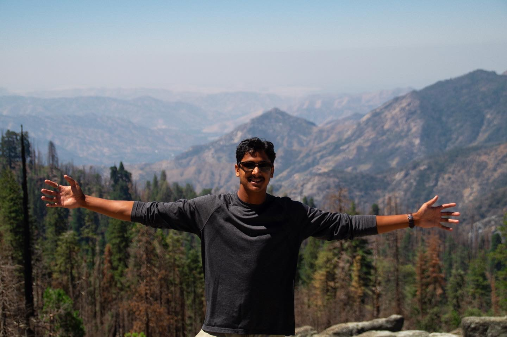

Welcome to My Portfolio!
About Me

My name is Indrajeet (Indy) Larsen, and I am a Senior at the University of Wisconsin-Eau Claire, majoring in Communications with an emphasis in Organizational Communication and minoring in Multimedia Communication. I am currently the president of the student photography organization on campus, through which we are partnering with Chippewa Valley Habitat for Humanity to support their media. Recently, I have adopted the role as the president of the UWEC chapter of the Society of Professional Journalists. We are currently reigniting the chapter to which I am very excited! Post graduation, I will be pursuing a career in Corporate Communications, Marketing or Advertising.
Work Experiences:
- Wedding Photographer, TimeIntoPixels, LLC.
- Corporate Communications Intern, UnitedHealth Group
- Head Lifeguard/Swim Instructor, YMCA
March 2023-Present
St. Louis Park, MN
June 2023-August 2023
Minnetonka, MN
May 2018-January 2021
St. Paul, MN
I am very passionate about digital photography, and plan to pursue it alongside my career. I want to show the world my passion, and my craft.